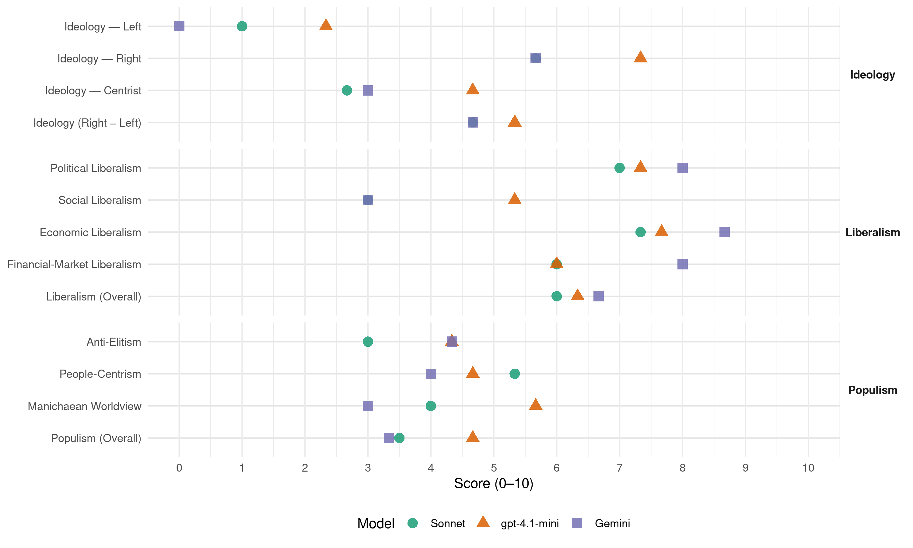

Republicans (United States, 2012)
manifesto_id 61620_201211
Get full text: This site shows derived annotations and short verbatim quotes only. The full manifesto text is © Manifesto Project / WZB — obtain it via manifesto-project.wzb.eu using the manifesto_id above.
Headline scores
| Dimension | Sonnet | gpt-4.1-mini | Gemini |
|---|---|---|---|
| Populism (Overall) | 3.5 | 4.7 | 3.3 |
| Anti-Elitism | 3.0 | 4.3 | 4.3 |
| People-Centrism | 5.3 | 4.7 | 4.0 |
| Manichaean Worldview | 4.0 | 5.7 | 3.0 |
| Ideology (Right − Left) | 4.7 | 5.3 | 4.7 |
| Liberalism (Overall) | 6.0 | 6.3 | 6.7 |
| Political Liberalism | 7.0 | 7.3 | 8.0 |
| Social Liberalism | 3.0 | 5.3 | 3.0 |
| Economic Liberalism | 7.3 | 7.7 | 8.7 |
| Financial-Market Liberalism | 6.0 | 6.0 | 8.0 |
Evidence per dimension
Economic Liberalism
Gemini · score 9.0 · verified · chunk 1
“maximum economic freedom and the prosperity”
We are the party of maximum economic freedom and the prosperity freedom makes possible. Prosperity is the product
Gemini · score 9.0 · verified · chunk 2
“promote a freemarket based system”
promote flexibility in State leadership in healthcare reform, promote a freemarket based system, and empower consumer choice.
Gemini · score 8.0 · verified · chunk 3
“companies should be free from legal and”
We believe that companies should be free from legal and regulatory barriers that prevent or deter them
gpt-4.1-mini · score 8.0 · verified · chunk 1
“We are the party of maximum economic freedom and the prosperity freedom makes possible”
We are the party of maximum economic freedom and the prosperity freedom makes possible. Prosperity is the product of selfdiscipline, work, savings, and investment by individual Americans, but it is not an end in itself.
gpt-4.1-mini · score 8.0 · verified · chunk 2
“free market”
Through Obamacare, the current Administration has promoted the notion of abortion as healthcare. We, however, affirm the dignity of women by protecting the sanctity of human life.
gpt-4.1-mini · score 7.0 · verified · chunk 3
“We recognize the need for, and value of, competition within a robust industrial base”
…We recognize the need for, and value of, competition within a robust industrial base to most effectively maximize quality and drive down costs in everything the Department buys. Supporting our Troops, Standing By Our Heroes The foundation of our military lies in the men and women who wear our country’s uniform, whether on active duty or in the Reserves and National Guard, and the families who support them…
Sonnet · score 8.0 · verified · chunk 1
“free market policies that are the surest way”
Republicans will pursue free market policies that are the surest way to boost employment and create job growth and economic prosperity
Sonnet · score 7.0 · verified · chunk 2
“promote a freemarket based system”
our practical, nonintrusive reforms will promote flexibility in State leadership in healthcare reform, promote a freemarket based system, and empower consumer choice.
Sonnet · score 7.0 · verified · chunk 3
“free enterprise, and measurable results”
must, in effect, compete for the dollars by showing respect for the rule of law, free enterprise, and measurable results
Financial-Market Liberalism
Gemini · score 8.0 · verified · chunk 1
“adequate financing and credit are available”
investments in small businesses. We will create an environment where adequate financing and credit are available to spur manufacturing
Gemini · score 8.0 · verified · chunk 2
“No financial institution is too big to fail”
force of the law should be used. But in all cases, this rule must apply: No financial institution is too big to fail.
gpt-4.1-mini · score 7.0 · verified · chunk 1
“FDIC insurance for bank depositors must be preserved. However, to correct for the moral hazard created by deposit insurance, banks should be well capitalized”
FDIC insurance for bank depositors must be preserved. However, to correct for the moral hazard created by deposit insurance, banks should be well capitalized, which is the best insurance against future taxpayer bailouts.
gpt-4.1-mini · score 6.0 · verified · chunk 2
“reasonable federal oversight of financial institutions”
We propose reasonable federal oversight of financial institutions, practical safeguards for consumers, and sound spending, tax, and regulatory policies that will allow those institutions to once again become the builders of the next American century.
gpt-4.1-mini · score 5.0 · verified · chunk 3
“The costly and heavyhanded regulatory approach by the current Administration”
…The current Administration’s laws and policies undermine what should be a collaborative relationship and put both the government and private entities at a severe disadvantage in proactively identifying potential cyberthreats. The costly and heavyhanded regulatory approach by the current Administration will increase the size and cost of the federal bureaucracy and harm innovation in cybersecurity. The government collects valuable information about potential threats that can and should be shared with private entities without compromising national security…
Sonnet · score 6.0 · verified · chunk 1
“mortgage finance system based on competition and free enterprise”
We must establish a mortgage finance system based on competition and free enterprise that is transparent, encourages the private sector
Sonnet · score 6.0 · verified · chunk 2
“institutional transparency. Banks need to know”
A far better approach—protecting consumers and taxpayers alike—is institutional transparency. Banks need to know that they could be at risk, and investors need clear rules that are not subject to political meddling.
Sonnet · score 6.0 · verified · chunk 3
“manipulation of its currency”
China’s failure to enforce international standards for the protection of intellectual property and copyrights, as well as its manipulation of its currency, call for a firm response
Political Liberalism
Gemini · score 8.0 · verified · chunk 1
“Adhere to the rule of law.”
Trust the people. Limit government. Respect federalism. Guarantee opportunity, not outcomes. Adhere to the rule of law.
Gemini · score 8.0 · verified · chunk 2
“protecting the constitutional rights of citizens”
more important for the future of our nation: protecting the constitutional rights of citizens, sustainable prosperity, and strengthening
Gemini · score 8.0 · verified · chunk 3
“representative and responsive democratic government that respects”
and meet international standards” and “a representative and responsive democratic government that respects human rights
gpt-4.1-mini · score 8.0 · verified · chunk 1
“We are the party of the Constitution, the solemn compact which confirms our Godgiven individual rights and assures that all Americans stand equal before the law”
We are the party of the Constitution, the solemn compact which confirms our Godgiven individual rights and assures that all Americans stand equal before the law. Perhaps the greatest political document ever written, it defines the purposes and limits of government and is the blueprint for ordered liberty that makes the U.S. the world’s freest, most stable, and most prosperous nation.
gpt-4.1-mini · score 7.0 · verified · chunk 2
“rule of law”
The U.S. Constitution is the law of the land. Judicial activism which includes reliance on foreign law or unratified treaties undermines American law.
gpt-4.1-mini · score 7.0 · verified · chunk 3
“We call upon the entire chain of command— from the President”
…We call upon the entire chain of command— from the President and the Secretary of Defense, to base and unit commanders—to ensure that our troops and retired service members, wherever stationed, have the opportunity to vote in the November elections, and that their ballots will be returned in time to be properly counted. Those who fight for and defend freedom around the world must not be disenfranchised…
Sonnet · score 7.0 · verified · chunk 1
“separation of powers and its checks and balances”
using executive orders to bypass the separation of powers and its checks and balances, encouraging illegal actions by regulatory agencies
Sonnet · score 6.0 · mixed · chunk 2
“protecting the constitutional rights of citizens”
Our goal is not just less spending in Washington but something far more important for the future of our nation: protecting the constitutional rights of citizens, sustainable prosperity, and strengthening the American family.
Sonnet · score 7.0 · verified · chunk 3
“free, fair, and meet international standards”
We affirm the unanimous resolution of the U.S. Senate calling for ‘elections that are free, fair, and meet international standards’
Liberalism (Overall)
Gemini · score 7.0 · verified · chunk 1
“maximum economic freedom and the prosperity”
We are the party of maximum economic freedom and the prosperity freedom makes possible. Prosperity is the product
Gemini · score 7.0 · verified · chunk 2
“promote a freemarket based system”
promote flexibility in State leadership in healthcare reform, promote a freemarket based system, and empower consumer choice.
Gemini · score 6.0 · verified · chunk 3
“companies should be free from legal and”
We believe that companies should be free from legal and regulatory barriers that prevent or deter them
gpt-4.1-mini · score 7.0 · verified · chunk 1
“We are the party of the Constitution, the solemn compact which confirms our Godgiven individual rights and assures that all Americans stand equal before the law”
We are the party of the Constitution, the solemn compact which confirms our Godgiven individual rights and assures that all Americans stand equal before the law. Perhaps the greatest political document ever written, it defines the purposes and limits of government and is the blueprint for ordered liberty that makes the U.S. the world’s freest, most stable, and most prosperous nation.
gpt-4.1-mini · score 6.0 · verified · chunk 2
“rule of law”
The U.S. Constitution is the law of the land. Judicial activism which includes reliance on foreign law or unratified treaties undermines American law.
gpt-4.1-mini · score 6.0 · verified · chunk 3
“We support rights of conscience and religious freedom for military chaplains”
…With military suicides running at the rate of one a day, with postservice medical conditions, including addiction and mental illness, and with the financial stress and homelessness that is often related to these factors, there is an urgent need for the kind of counseling that faithbased institutions can best provide. We support rights of conscience and religious freedom for military chaplains and people of faith. A Republican Commander in Chief will protect religious independence of military chaplains and will not tolerate attempts to ban Bibles or religious symbols from military facilities…
Sonnet · score 6.0 · verified · chunk 1
“free market policies that are the surest way”
Republicans will pursue free market policies that are the surest way to boost employment and create job growth and economic prosperity
Sonnet · score 6.0 · verified · chunk 2
“No financial institution is too big to fail”
But in all cases, this rule must apply: No financial institution is too big to fail. The taxpayers must never again be on the hook for the losses of Fannie Mae and Freddie Mac.
Sonnet · score 6.0 · verified · chunk 3
“free enterprise”
showing respect for the rule of law, free enterprise, and measurable results. In short, aid money should follow positive outcomes
Anti-Elitism
Gemini · score 6.0 · verified · chunk 1
“liberal elites try to drive religious beliefs”
as liberal elites try to drive religious beliefs— and religious believers—out of the public square.
Gemini · score 4.0 · verified · chunk 2
“oppression by corrupt elites”
homelands has meant economic exploitation and political oppression by corrupt elites. In this country, the rule of law guarantees
Gemini · score 3.0 · verified · chunk 3
“earmarks that put personal and parochial interests”
We reject Congressional earmarks that put personal and parochial interests ahead of military effectiveness
gpt-4.1-mini · score 7.0 · verified · chunk 1
“the chronic high unemployment and the unsustainable debt produced by a big government entitlement society”
Every voter will be asked to choose between the chronic high unemployment and the unsustainable debt produced by a big government entitlement society, or a positive, optimistic view of an opportunity society, where any American who works hard, dreams big and follows the rules can achieve anything he or she wants.
gpt-4.1-mini · score 3.0 · verified · chunk 2
“corrupt elites”
lack of respect for the rule of law in their homelands has meant economic exploitation and political oppression by corrupt elites. In this country, the rule of law guarantees equal treatment to every individual, including more than one million immigrants to whom we grant permanent residence every year.
gpt-4.1-mini · score 3.0 · verified · chunk 3
“The current Administration’s laws and policies undermine”
…cyberthreat information between the government and industry, as well as protecting the free flow of information within the private sector. The current Administration’s laws and policies undermine what should be a collaborative relationship and put both the government and private entities at a severe disadvantage in proactively identifying potential cyberthreats. The costly and heavyhanded regulatory approach by the current Administration will increase the size and cost of the federal bureaucracy and harm innovation in cybersecurity. The government collects valuable information…
Sonnet · score 5.0 · mixed · chunk 1
“liberal elites try to drive religious beliefs”
as liberal elites try to drive religious beliefs— and religious believers—out of the public square
Sonnet · score 5.0 · mixed · chunk 2
“Congressional Democrats and the current Administration block”
today’s taxpayers—and future generations—face massive indebtedness, while Congressional Democrats and the current Administration block every attempt to turn things around.
Sonnet · score 3.0 · verified · chunk 3
“overpaid bureaucrats”
starting with full transparency in the financial operations of its overpaid bureaucrats. As long as its scandal-ridden management continues
Ideology — Centrist
Gemini · score 3.0 · verified · chunk 1
“Trust the people. Limit government.”
That sacred document shows us the path forward. Trust the people. Limit government. Respect federalism.
gpt-4.1-mini · score 6.0 · verified · chunk 1
“Trust the people. Limit government. Respect federalism. Guarantee opportunity, not outcomes”
That sacred document shows us the path forward. Trust the people. Limit government. Respect federalism. Guarantee opportunity, not outcomes. Adhere to the rule of law.
gpt-4.1-mini · score 5.0 · verified · chunk 2
“government closest to the people”
Their leadership in reforming and reengineering government closest to the people vindicates the role of the States as the laboratories of democracy. Our approach, like theirs, is twofold.
gpt-4.1-mini · score 3.0 · verified · chunk 3
“we must be able to articulate candidly to the American people”
…We will honor President Reagan’s legacy of peace through strength by advancing the most costeffective programs and policies crucial to our national security, including our economic security and fiscal solvency. To do that, we must honestly assess the threats facing this country , and we must be able to articulate candidly to the American people our priorities for the use of taxpayer dollars to address those threats. We must deter any adversary who would attack us or use terror as a tool of government…
Sonnet · score 3.0 · verified · chunk 1
“opportunity society stands in stark contrast”
Our vision of an opportunity society stands in stark contrast to the current Administration’s policies
Sonnet · score 3.0 · verified · chunk 2
“We are the party of government reform”
Reforming Government to Serve the People. We are the party of government reform. At a time when the federal government has become bloated, antiquated and unresponsive to taxpayers.
Sonnet · score 2.0 · verified · chunk 3
“taxpayer dollars wisely”
The Department of Defense, like all government agencies, needs to be careful to spend taxpayers’ dollars wisely
Ideology — Left
Gemini · score 0.0 · verified · chunk 1
“reject the use of taxation to redistribute”
care for themselves. We reject the use of taxation to redistribute income, fund unnecessary or ineffective
gpt-4.1-mini · score 3.0 · verified · chunk 1
“We reject the use of taxation to redistribute income, fund unnecessary or ineffective programs, or foster the crony capitalism”
Taxes, by their very nature, reduce a citizen’s freedom. Their proper role in a free society should be to fund services that are essential and authorized by the Constitution, such as national security, and the care of those who cannot care for themselves. We reject the use of taxation to redistribute income, fund unnecessary or ineffective programs, or foster the crony capitalism that corrupts both politicians and corporations.
gpt-4.1-mini · score 2.0 · verified · chunk 2
“block grant Medicaid and other payments to the States”
To return the States to their proper role of regulating local insurance markets and caring for the needy, we propose to block grant Medicaid and other payments to the States; limit federal requirements on both private insurance and Medicaid; assist all patients, including those with preexisting conditions, through reinsurance and risk adjustment; and promote nonlitigation alternatives for dispute resolution.
gpt-4.1-mini · score 2.0 · verified · chunk 3
“The costly and heavyhanded regulatory approach by the current Administration”
…The current Administration’s laws and policies undermine what should be a collaborative relationship and put both the government and private entities at a severe disadvantage in proactively identifying potential cyberthreats. The costly and heavyhanded regulatory approach by the current Administration will increase the size and cost of the federal bureaucracy and harm innovation in cybersecurity. The government collects valuable information about potential threats that can and should be shared with private entities without compromising national security…
Sonnet · score 1.0 · verified · chunk 1
“We reject the use of taxation to redistribute income”
We reject the use of taxation to redistribute income, fund unnecessary or ineffective programs, or foster the crony capitalism
Sonnet · score 1.0 · verified · chunk 3
“reject Congressional earmarks”
We reject Congressional earmarks that put personal and parochial interests ahead of military effectiveness and the best interests of the nation
Ideology (Right − Left)
Gemini · score 6.0 · verified · chunk 1
“distinguished from lawfully present aliens and illegal”
conducted, so that citizens are distinguished from lawfully present aliens and illegal aliens. In order to
Gemini · score 5.0 · verified · chunk 2
“Illegal immigration undermines those benefits”
enriches our culture, and enables us to better understand. Illegal immigration undermines those benefits and affects U.S. workers.
Gemini · score 3.0 · verified · chunk 3
“concern for American sovereignty, domestic management”
Because of our concern for American sovereignty, domestic management of our fisheries, and our country’s
gpt-4.1-mini · score 7.0 · verified · chunk 1
“Trust the people. Limit government. Respect federalism. Guarantee opportunity, not outcomes”
That sacred document shows us the path forward. Trust the people. Limit government. Respect federalism. Guarantee opportunity, not outcomes. Adhere to the rule of law.
gpt-4.1-mini · score 5.0 · verified · chunk 2
“government closest to the people”
Their leadership in reforming and reengineering government closest to the people vindicates the role of the States as the laboratories of democracy. Our approach, like theirs, is twofold.
gpt-4.1-mini · score 4.0 · verified · chunk 3
“The current Administration’s laws and policies undermine”
…cyberthreat information between the government and industry, as well as protecting the free flow of information within the private sector. The current Administration’s laws and policies undermine what should be a collaborative relationship and put both the government and private entities at a severe disadvantage in proactively identifying potential cyberthreats. The costly and heavyhanded regulatory approach by the current Administration will increase the size and cost of the federal bureaucracy and harm innovation in cybersecurity. The government collects valuable information…
Sonnet · score 4.0 · verified · chunk 1
“liberal elites try to drive religious beliefs”
as liberal elites try to drive religious beliefs— and religious believers—out of the public square
Sonnet · score 6.0 · verified · chunk 2
“Use of the Everify program…must be made mandatory nationwide”
We insist upon enforcement at the workplace through verification systems so that jobs can be available to all legal workers. Use of the Everify program—an internetbased system that verifies the employment authorization and identity of employees—must be made mandatory nationwide.
Sonnet · score 4.0 · verified · chunk 3
“national sovereignty”
We strongly reject the U.N. Agenda 21 as erosive of American sovereignty, and we oppose any form of U.N. Global Tax
Ideology — Right
Gemini · score 7.0 · verified · chunk 1
“distinguished from lawfully present aliens and illegal”
conducted, so that citizens are distinguished from lawfully present aliens and illegal aliens. In order to
Gemini · score 6.0 · verified · chunk 2
“Illegal immigration undermines those benefits”
enriches our culture, and enables us to better understand. Illegal immigration undermines those benefits and affects U.S. workers.
Gemini · score 4.0 · verified · chunk 3
“concern for American sovereignty, domestic management”
Because of our concern for American sovereignty, domestic management of our fisheries, and our country’s
gpt-4.1-mini · score 8.0 · verified · chunk 1
“We reaffirm our support for a Constitutional amendment defining marriage as the union of one man and one woman”
We reaffirm our support for a Constitutional amendment defining marriage as the union of one man and one woman. We applaud the citizens of the majority of States which have enshrined in their constitutions the traditional concept of marriage, and we support the campaigns underway in several other States to do so.
gpt-4.1-mini · score 7.0 · verified · chunk 2
“illegal immigration undermines those benefits”
Illegal immigration undermines those benefits and affects U.S. workers. In an age of terrorism, drug cartels, human trafficking, and criminal gangs, the presence of millions of unidentified persons in this country poses grave risks to the safety and the sovereignty of the United States.
gpt-4.1-mini · score 7.0 · verified · chunk 3
“We will honor President Reagan’s legacy of peace through strength”
…An America That Leads: The Republican National Security Strategy for the Future We will honor President Reagan’s legacy of peace through strength by advancing the most costeffective programs and policies crucial to our national security, including our economic security and fiscal solvency. To do that, we must honestly assess the threats facing this country , and we must be able to articulate candidly to the American people our priorities for the use of taxpayer dollars to address those threats…
Sonnet · score 5.0 · verified · chunk 1
“granting more work visas to holders of advanced degrees”
a policy of strategic immigration, granting more work visas to holders of advanced degrees in science, technology, engineering, and math
Sonnet · score 7.0 · verified · chunk 2
“Illegal immigration undermines those benefits and affects U.S. workers”
Illegal immigration undermines those benefits and affects U.S. workers. In an age of terrorism, drug cartels, human trafficking, and criminal gangs, the presence of millions of unidentified persons in this country poses grave risks.
Sonnet · score 5.0 · verified · chunk 3
“resist foreign influence in our hemisphere”
We will resist foreign influence in our hemisphere. We thereby seek not only to provide for our own security
Manichaean Worldview
Gemini · score 4.0 · verified · chunk 1
“always stand against tyranny and oppression”
tear down this Wall,” so must we always stand against tyranny and oppression. We will always support
Gemini · score 2.0 · verified · chunk 3
“to defeat the enemies of the United States”
only our capability to wield overwhelming military power can truly deter the enemies of the United States from threatening
gpt-4.1-mini · score 7.0 · verified · chunk 1
“The times call for trustworthy leadership and honest talk about the challenges we face”
Put simply: The times call for trustworthy leadership and honest talk about the challenges we face. Our nation and our people cannot afford the status quo.
gpt-4.1-mini · score 3.0 · verified · chunk 2
“enemies both abroad and within our shores”
Our country and its way of life have enemies both abroad and within our shores. We affirm the need for our military to protect the nation by finding and capturing our enemies and the necessity for the President to have the tools to deal with these threats.
gpt-4.1-mini · score 7.0 · verified · chunk 3
“Every potential enemy must have no doubt that our capabilities”
…use of taxpayer dollars to address those threats. We must deter any adversary who would attack us or use terror as a tool of government. Every potential enemy must have no doubt that our capabilities, our commitment, and our will to defeat them are clear, unwavering, and unequivocal. We must immediately employ a new blueprint for a National Military Strategy that is based on an informed and validated assessment of the potential threats we face…
Sonnet · score 4.0 · mixed · chunk 1
“culture of dependency, bloated government”
That road has created a culture of dependency, bloated government, and massive debt.
Sonnet · score 4.0 · verified · chunk 2
“the public must never again be left holding the bag”
The taxpayers must never again be on the hook for the losses of Fannie Mae and Freddie Mac. The public must never again be left holding the bag for Wall Street giants.
Sonnet · score 4.0 · verified · chunk 3
“enemies of the United States”
can truly deter the enemies of the United States from threatening our people and our national interests
People-Centrism
Gemini · score 5.0 · verified · chunk 1
“Trust the people. Limit government.”
That sacred document shows us the path forward. Trust the people. Limit government. Respect federalism.
Gemini · score 5.0 · verified · chunk 2
“closest to the people”
Their leadership in reforming and reengineering government closest to the people vindates the role of the States
Gemini · score 2.0 · verified · chunk 3
“shield for the people of the United States”
fully deploy a missile defense shield for the people of the United States and for our allies
gpt-4.1-mini · score 8.0 · verified · chunk 1
“The American people possess vast reserves of courage and determination”
The American people possess vast reserves of courage and determination and the capacity to hear the truth and chart a strong course. They are eager for the opportunity to take on life’s challenges and, through faith and hard work, transform the future for the better.
gpt-4.1-mini · score 4.0 · verified · chunk 2
“government closest to the people”
Their leadership in reforming and reengineering government closest to the people vindicates the role of the States as the laboratories of democracy. Our approach, like theirs, is twofold.
gpt-4.1-mini · score 2.0 · verified · chunk 3
“the American people our priorities for the use of taxpayer dollars”
…we must be able to articulate candidly to the American people our priorities for the use of taxpayer dollars to address those threats. We must deter any adversary who would attack us or use terror as a tool of government. Every potential enemy must have no doubt that our capabilities, our commitment, and our will to defeat them are clear, unwavering, and unequivocal. We must immediately employ a new blueprint for a National Military Strategy…
Sonnet · score 7.0 · verified · chunk 1
“Trust the people. Limit government.”
That sacred document shows us the path forward. Trust the people. Limit government. Respect federalism.
Sonnet · score 5.0 · verified · chunk 2
“we look to the private sector; for the American people’s resourcefulness”
For all other activities, we look to the private sector; for the American people’s resourcefulness, productivity, innovation, fiscal responsibility, and citizen-leadership have always been the true foundation of our national greatness.
Sonnet · score 4.0 · verified · chunk 3
“articulate candidly to the American people”
we must be able to articulate candidly to the American people our priorities for the use of taxpayer dollars to address those threats
Populism (Overall)
Gemini · score 5.0 · verified · chunk 1
“Trust the people. Limit government.”
That sacred document shows us the path forward. Trust the people. Limit government. Respect federalism.
Gemini · score 3.0 · verified · chunk 2
“oppression by corrupt elites”
homelands has meant economic exploitation and political oppression by corrupt elites. In this country, the rule of law guarantees
Gemini · score 2.0 · verified · chunk 3
“earmarks that put personal and parochial interests”
We reject Congressional earmarks that put personal and parochial interests ahead of military effectiveness
gpt-4.1-mini · score 7.0 · verified · chunk 1
“the chronic high unemployment and the unsustainable debt produced by a big government entitlement society”
Every voter will be asked to choose between the chronic high unemployment and the unsustainable debt produced by a big government entitlement society, or a positive, optimistic view of an opportunity society, where any American who works hard, dreams big and follows the rules can achieve anything he or she wants.
gpt-4.1-mini · score 3.0 · verified · chunk 2
“corrupt elites”
lack of respect for the rule of law in their homelands has meant economic exploitation and political oppression by corrupt elites. In this country, the rule of law guarantees equal treatment to every individual, including more than one million immigrants to whom we grant permanent residence every year.
gpt-4.1-mini · score 4.0 · verified · chunk 3
“The current Administration’s laws and policies undermine”
…cyberthreat information between the government and industry, as well as protecting the free flow of information within the private sector. The current Administration’s laws and policies undermine what should be a collaborative relationship and put both the government and private entities at a severe disadvantage in proactively identifying potential cyberthreats. The costly and heavyhanded regulatory approach by the current Administration will increase the size and cost of the federal bureaucracy and harm innovation in cybersecurity. The government collects valuable information…
Sonnet · score 5.0 · mixed · chunk 1
“Trust the people. Limit government.”
That sacred document shows us the path forward. Trust the people. Limit government. Respect federalism.
Sonnet · score 4.0 · verified · chunk 2
“government has become bloated, antiquated and unresponsive to taxpayers”
At a time when the federal government has become bloated, antiquated and unresponsive to taxpayers, it is our intention not only to improve management and provide better services.
Sonnet · score 3.0 · verified · chunk 3
“current Administration’s laws and policies undermine”
The current Administration’s laws and policies undermine what should be a collaborative relationship and put both the government and private entities at a severe disadvantage
Social Liberalism